Accueil / Le magasin
LE MAGASIN · COL DE LA CROIX-FRY, MANIGODLE MAGASIN
LE MAGASIN · COL DE LA CROIX-FRY, MANIGODLE MAGASIN
AU PIED DES PISTES
Location, vente, atelier, bootfitting et consigne chauffée. Une équipe de skieurs, en face de l'ESF.
RÉSERVER →
−10 % AVANT LE 15 DÉCEMBRE · CODE WINTER27
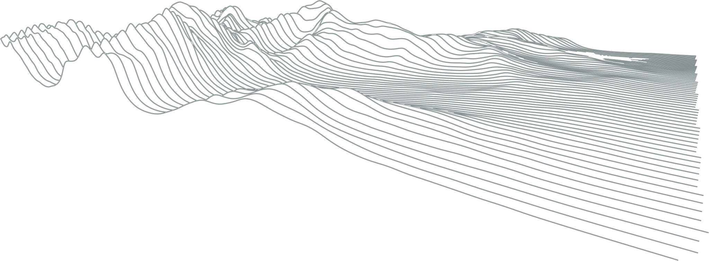
[ POURQUOI MANIGOD SKI RIDE ]
NOTRE PASSION
Amoureux du ski et de la montagne, on a choisi de vivre de cette passion et de la partager avec tous. Du ski alpin au ski de rando, de l'enfant qui décroche sa première médaille au débutant qui découvre la glisse, jusqu'au skieur de haut niveau qui cherche la performance.
[ QUI ON EST ]
L'ÉQUIPE
Une équipe de passionnés et de pratiquants.
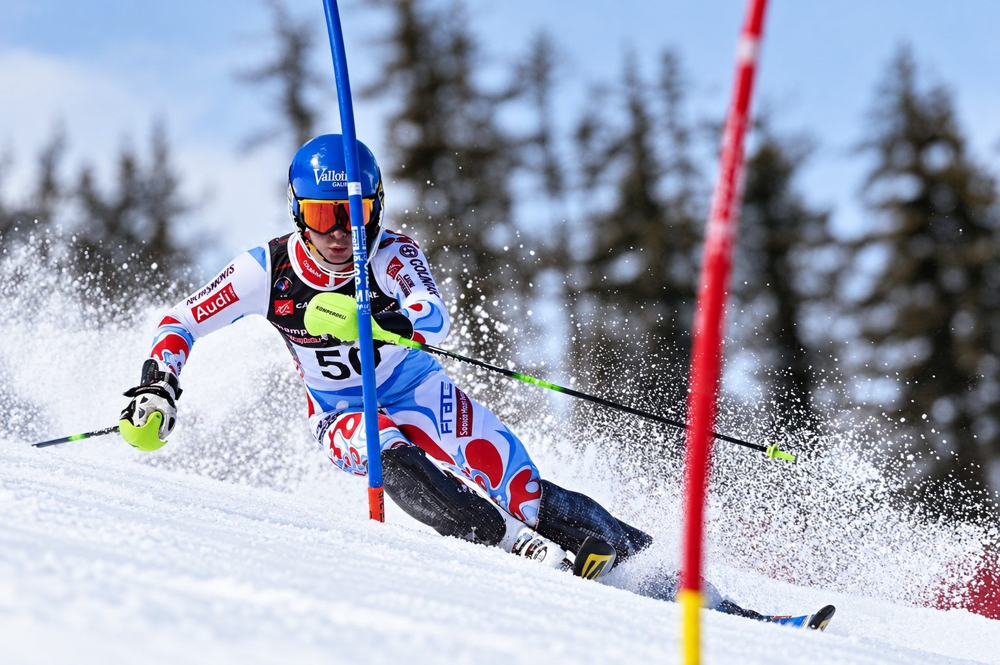
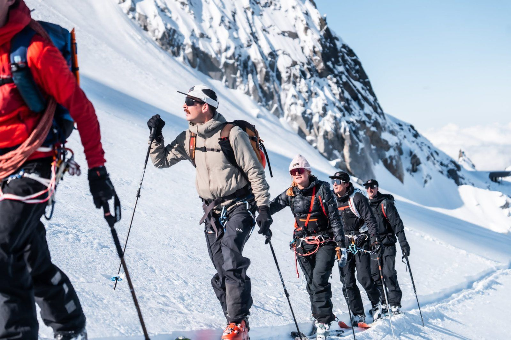
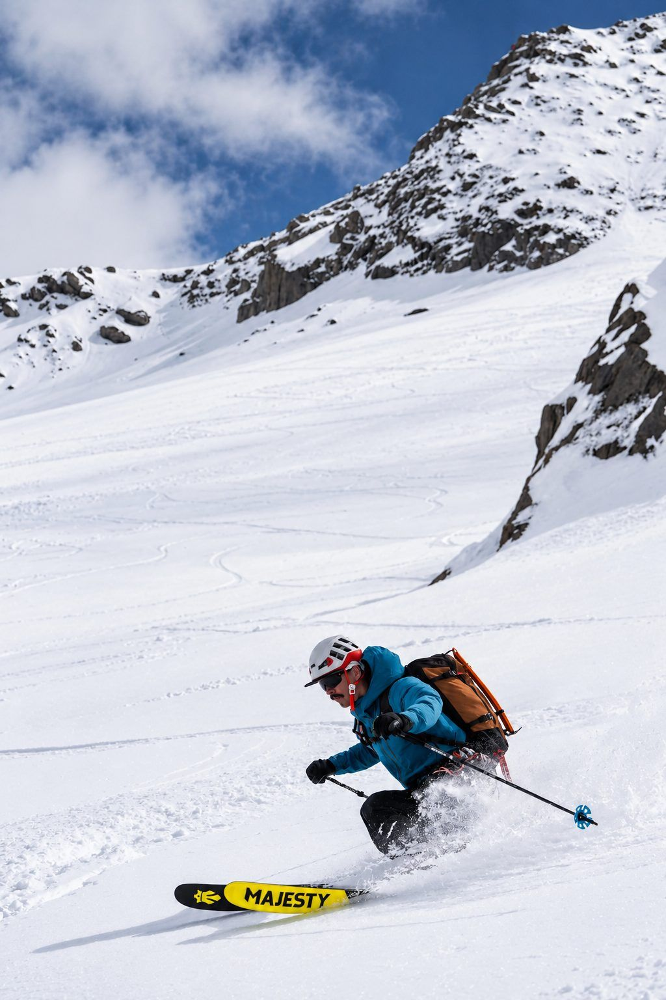
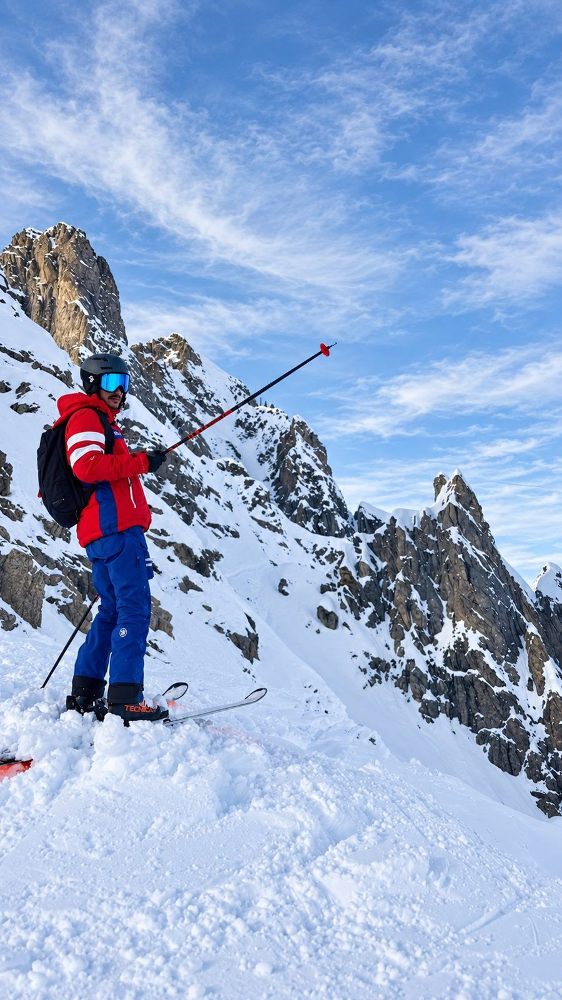
HUGO
SON PARCOURSNé sur la neige. Skieur de haut niveau en ski alpin (circuit FIS) : il aime découper la glace. Coach au ski club et moniteur à l'ESF. Cinq ans chez les Chasseurs alpins, au 27e BCA à Annecy.
SON COIN PRÉFÉRÉLe Grand Crêt à l'ouverture.
SON MATÉRIEL PRÉFÉRÉUn bon Stöckli de slalom, pour découper la glace entre deux pauses.
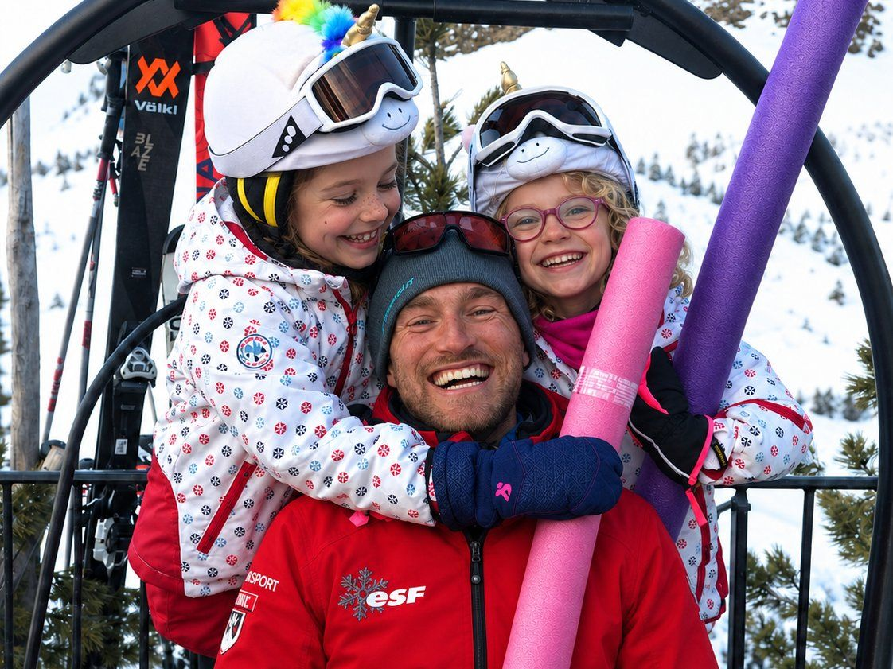
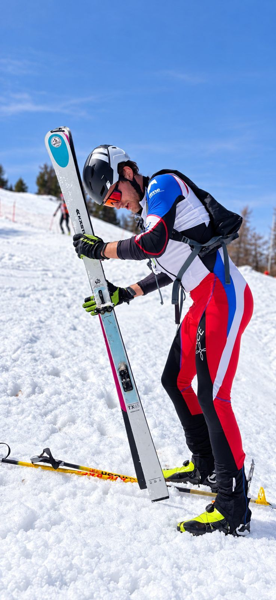
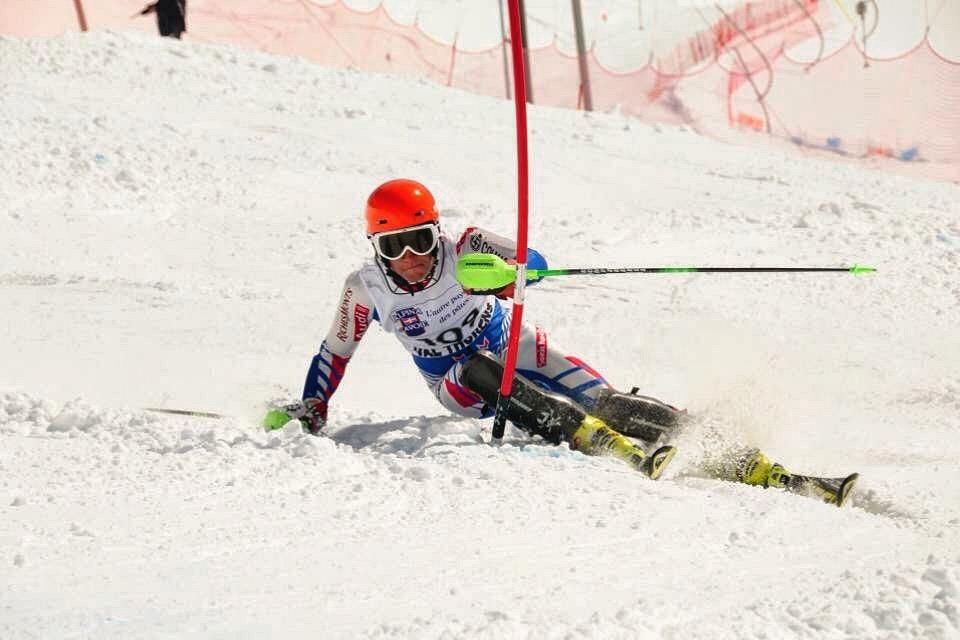
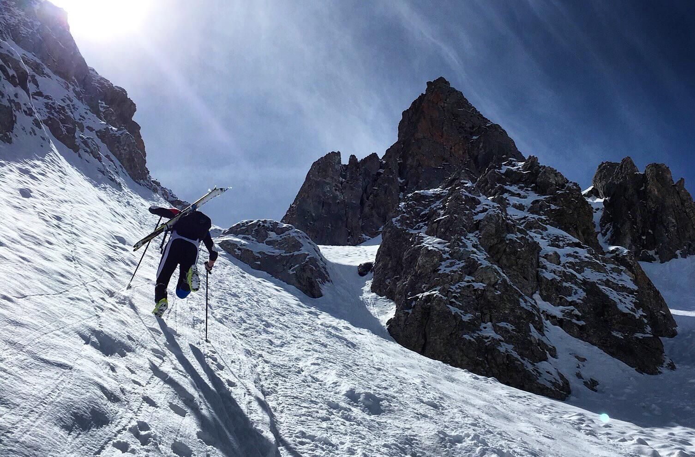
CÔME
SON PARCOURSComme son ami Hugo, moniteur de ski à l'ESF et ancien skieur sur le circuit FIS. Puis membre de l'équipe de France de ski-alpinisme.
SON COIN PRÉFÉRÉLes combes en ski de rando.
SON MATÉRIEL PRÉFÉRÉTeam Van Deer.
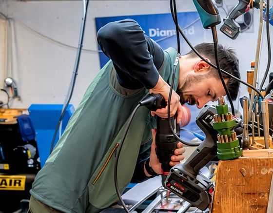
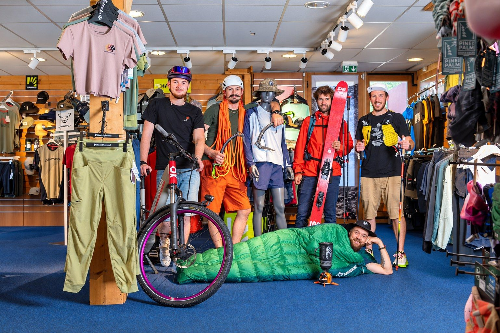
JO
SON PARCOURSTouche-à-tout en montagne, avec une spécialité alpinisme et escalade. Avec plus de dix ans chez Versant Nord, Jo est notre expert bootfitting et montage.
SON COIN PRÉFÉRÉUne Tournette au coucher du soleil.
SON MATÉRIEL PRÉFÉRÉUn Black Crows un peu large !
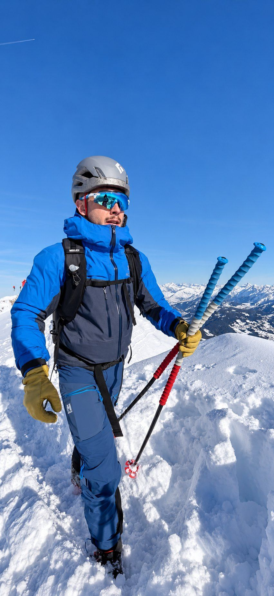
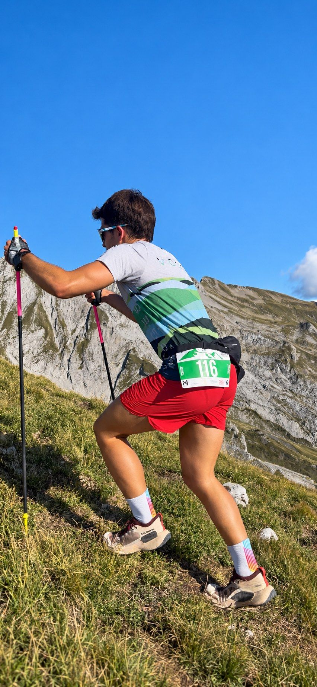
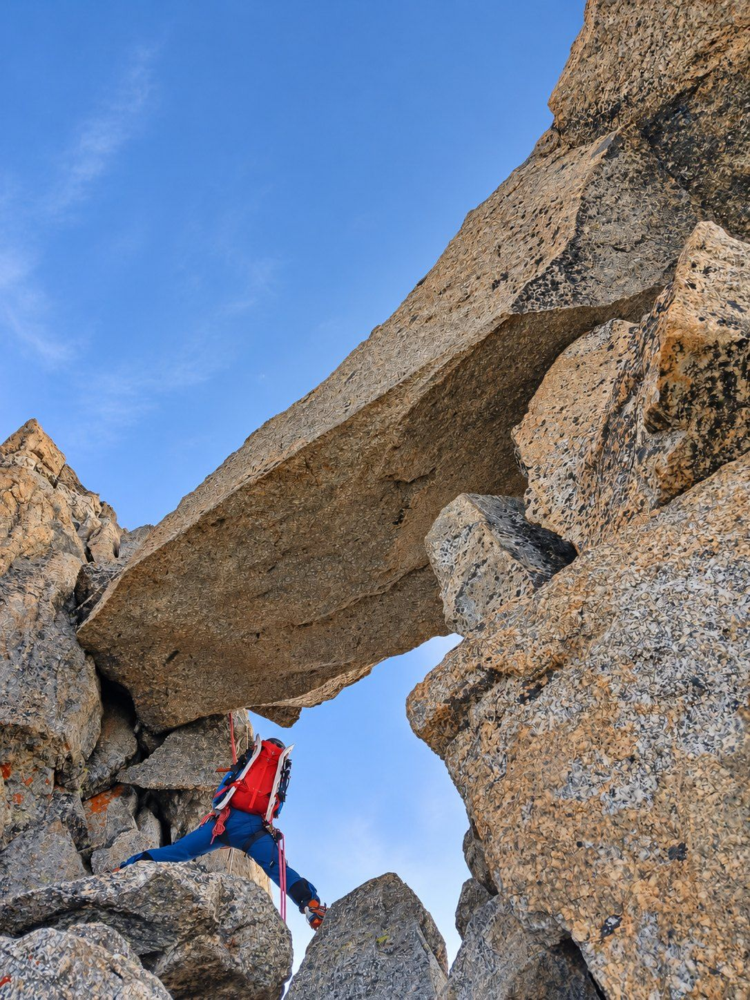
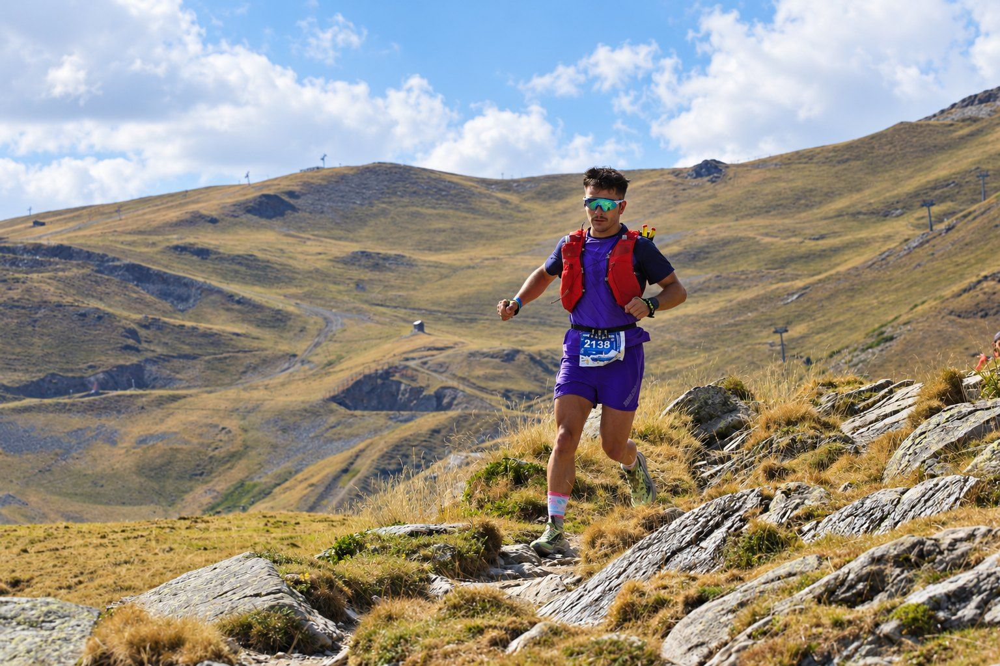
NATHAN
SON PARCOURSVosgien d'origine, Nathan s'est pris de passion pour les Aravis. Cinq ans chez les Chasseurs alpins au 27e BCA, avec Hugo !
SON COIN PRÉFÉRÉLa pointe de Merdassier, en ski ou en trail.
SON MATÉRIEL PRÉFÉRÉLes skis de fond Atomic, surtout à Beauregard.


PATTY
SON PARCOURSToujours en montagne, parfois au coin du feu. Pas assez souvent au magasin avec nous ! Si vous la reconnaissez au magasin : la location de luge est offerte ! 😉
SON COIN PRÉFÉRÉSe promener à Beauregard.
SON MATÉRIEL PRÉFÉRÉLes luges !!!
NOUS TROUVER
Où se garer
Grand parking gratuit du Col de la Croix-Fry, juste devant le magasin. Adresse
7066 route du Col de la Croix-Fry, 74230 Manigod LANCER L'ITINÉRAIRE → Au pied des pistes
Domaine La Clusaz–Manigod. En face de l'ESF, des caisses des forfaits et de l'office de tourisme. Horaires
8h30 – 18h
21h les soirs de nocturne
Grand parking gratuit du Col de la Croix-Fry, juste devant le magasin. Adresse
7066 route du Col de la Croix-Fry, 74230 Manigod LANCER L'ITINÉRAIRE → Au pied des pistes
Domaine La Clusaz–Manigod. En face de l'ESF, des caisses des forfaits et de l'office de tourisme. Horaires
8h30 – 18h
21h les soirs de nocturne

[ CE QU'ON LOUE ET CE QU'ON VEND ]
NOS MARQUES
Camp
Level
Boreal
[ À LA CROIX-FRY ]